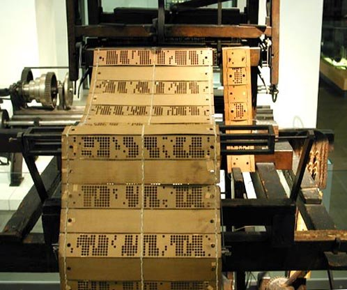

Evolução da Informática
A tecnologia tem evoluído exponencialmente nas últimas décadas,
revolucionando a forma como vivemos, trabalhamos e nos comunicamos.
Desde a invenção do computador até a recente popularização das Inteligências Artificiais,
a tecnologia tem causado um impacto significativo em nossas vidas diárias.
Sempre um assunto que causa especulação e que já foi pauta em muitos filmes, séries, livros e outras fontes de entretenimento,
a tecnologia tem nos surpreendido e alcançado patamares que pessoas presentes no começo dessa era não poderiam imaginar.
Neste artigo, vamos juntos em uma jornada através do tempo,
explorando a evolução da tecnologia ao longo das décadas e entendendo como chegamos até aqui.
Era Mercantil (Séculos XVI a XVIII)
Na era mercantil, identificada como era pré-mecânica,
o principal modo de comunicação era a escrita e os diversos tipos de alfabetos espalhados pelo mundo.
Aqui, as tecnologias mais avançadas estavam relacionadas ao plantio e a criação de animais, pois eram as principais atividades da época.
Por isso, ferramentas como arado e geração de energia com animais como roda d'água eram as invenções que poderiam ver durante este período.
O foco de crescimento também estava voltado para a expansão territorial, pois, quanto mais terra alguém tivesse,
maior era o seu poder de investimento e lucro.

Era Industrial (1800 a 1830)
A era industrial abrange um período bem menor que a anterior, mas por um motivo específico.
Entre os anos de 1820 e 1840, aconteceu a Revolução Industrial, que deu início a uma aceleração tecnológia e trouxe invenções como a máquina a vapor.
Caracterizada por uma rápida mudança de uma economia agrária para uma economia manufatureira.
Agora, os produtos não estavam mais sendo feitos a mão, e começam a serem feitos por máquinas,
aumentando a produção e mudando a maneira em que a humanidade passou a ver o comércio, produção, e automação de tarefas.
Nesta fase, as tecnologias principais eram a máquina de fiar, o tear mecânico, a locomotiva, e outros.
A ideia principal era automatizar coisas que eram somente feitas por humanos, fazendo com que a produção se tornasse muito mais rápida.

Era da Informação (Século XX)
A era da informação é caracterizada por uma mudança radical na indústria tradicional que já estava estabelecida pelos moldes da Revolução Industrial para uma nova economia,
agora baseada principalmente na informação tecnológica.
Com a chegada de tecnologias como computadores, televisão por satélite, internet, jornais e radio,
a informação começou a se espalhar cada vez mais rápido, chegando em lugares onde antes não era possível.
Essa é a era que estamos acostumados a ouvir, onde os dispositivos que fazem parte de nossa vida foram criados ou prototipados.
A conectividade passou a ser a palavra da vez, e a moeda de troca começa a ser a informação.
Quem possui mais informação está no controle do que acontece e do que as pessoas tem acesso.
Era Digital (Dias Atuais)
Atualmente, estamos na Era Digital.
Engana-se quem associa a era da informação, a adoção de celulares, popularização de computadores e laptops, tablets e wearables com os dias que vivemos.
Agora, em 2023, a era digital tem como principal característica a grande proporção de informação disponível para muitas pessoas.
Fomos do analógico para o mecânico e agora, para o tecnológico.
Muitas profissões deixaram de existir ou tiveram que ser adaptadas para a grande quantidade de informações disponíveis.
Estamos acompanhando atualmente a popularização das IAs, que possuem toda a internet como fonte de busca e conhecimento.
Chega a ser assustadora a evolução até aqui, mas ainda não paramos nas inovações.
As principais tecnologias dessa era são as nuvens, ou clouds, e a migração de muitas empresas ou até pessoas que passaram a utilizar esse serviço em nuvem,
armazenamento massivo de dados que podem ser acessados de qualquer lugar, sem depender de algo físico;
a automação de serviços está ainda mais presente; e a Internet das Coisas, ou IoT, que basicamente é uma rede de dispositivos, todos conectados através da internet.
Década da Tecnologia (Futuro)
A era digital abre espaço para a Era da Tecnologia, que é para onde estamos indo agora.
Os próximos anos até 2030 reservam muitas novidades e avanços que ainda não podemos prever, e alguns que só ouvimos falar.
A ideia dessa nova era é a junção da tecnologia com a sociedade, e como ambos avançaram além de limitações físicas para andarem juntos.
Nossa realidade está cada vez mais próxima de ser totalmente fluida e multi-mediada.
Além disso, algumas tendências para essa nova década nos aguardam:
o desenvolvimento e a chegada do 6G, tecnologias voltadas para o espaço, ou SpaceTech,
mais tecnologias imersivas como a realidade aumentada ou virtual e o estabelecimento da cloud como soberana para empresas.
 >
>